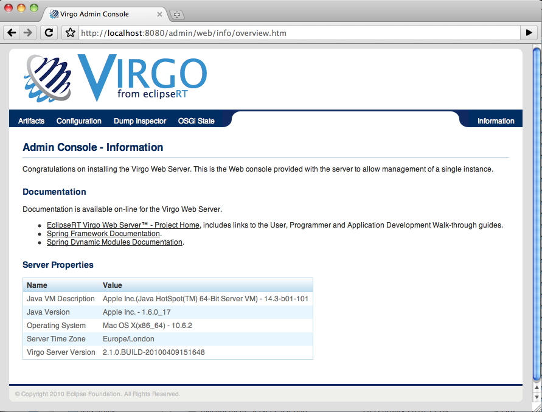

Table of Contents
The Web Server Admin Console is a Web application for managing a single instance of Virgo Tomcat Server or Virgo Jetty Server (referred to, generically, as "Web Server" below). Using the Admin Console, you can:
View and manage the lifecycle of artifacts already deployed to the Web Server instance. Artifacts include bundles, configuration files, PARs, and plans. Lifecycle management tasks include starting, stopping, refreshing, and uninstalling the artifacts.
View the properties of the configuration artifacts deployed to Web Server.
View details of dump files that Web Server might have generated after encountering a problem. This feature is particularly valuable if Web Server fails to install a new artifact due to resolution failures; the OSGi state inspector can help you discover the exact artifact causing the resolution failure.
View an overview and details of the OSGi State of Web Server, or in other words, a list of all bundles currently installed in Web Server and their state. You can then drill down into the details of each bundle, such as its symbolic name, packages it imports and exports, services it provides and consumes, and so on. You can also view the bundles that were deployed when an exception that generated a dump occurred.
To use the Admin Console, start the Virgo Tomcat Server and then enter the following URL in your browser of choice.
http://localhost:8080/admin
Replace localhost with the hostname of the computer on which the Virgo Tomcat Server is running if it is not the same as the computer on which you are running your browser.
The Admin Console uses basic authentication, therefore you will need to enter the default administration ID and password.
ID: admin Password: springsource
The following graphic shows the main page of the Admin Console.
|  |
Use the links at the top of the console to perform various tasks, such as viewing and managing artifacts (Artifacts), viewing the properties of deployed configuration artifacts (Configuration), viewing details of dumps (Dump Inspector), and viewing the OSGi state of the Web Server instance (OSGi State).
You can always return to the main Admin Console page by clicking Information in the top right-hand corner.
The Server Properties section provides information about Web Server itself, such as details about the Java Virtual Machine (JVM), the operating system on which Web Server is installed, the time zone configured for the computer, and the complete version of Web Server.
To change the ID and password for the Admin Console, update the SERVER_HOME/configuration/org.eclipse.virgo.kernel.users.properties file. First specify the administration username by changing the value of the role.admin property. Then set the password of this new user by adding a new property called user.username, where username refers to the actual name of the user. Finally, restart Web Server for the changes to take effect.
For example, if you want change the administration username to juliet with password capulet, change the file as follows:
################## # User definitions ################## user.juliet=capulet ################## # Role definitions ################## role.admin=juliet
The Admin Console always runs against the admin role.